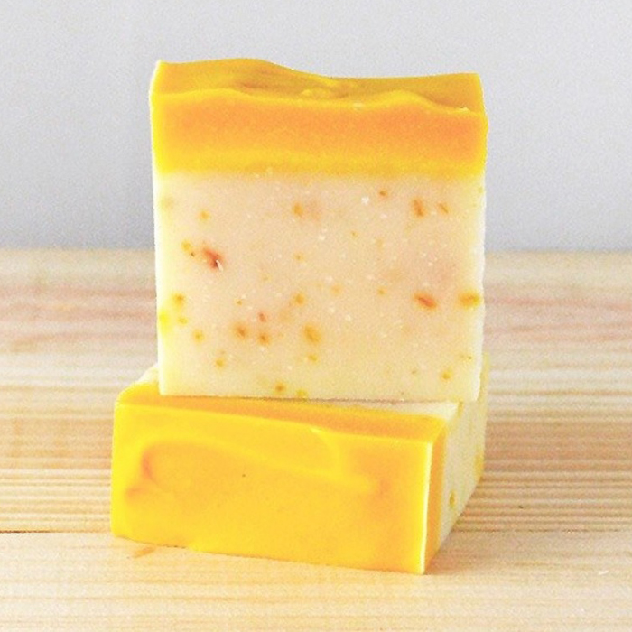

黃金雨 冷製熟成手工皂
保濕舒緩金盞花皂 中性肌膚
滿載 Marigold 金盞花 (Calendula officinalis) 的一款金色印象手工皂～
『第一次買JL House手工皂就選它吧！』
這是一款開賣之後最受使用者喜愛的皂款之一，
無論您是乾肌或混合性肌膚，平衡肌膚問題，始終是手作皂最實際的任務～
金色之名取自曬過太陽的金盞花深金色澤，柑橘調的香味像一杯即時出現的果汁、
最能撫慰心情，讓我們將所有增添元氣的元素調和在一起，寬慰勞累的心靈，在
沐浴時光中享受一陣酸甜花香的黃金雨。
★製作成份：
橄欖油,玄米油,甜杏仁油,椰子油,紅棕櫚果油,棕櫚油,金盞花花瓣,薑黃粉,純水,
氫氧化鈉。複方植物精油：檸檬馬鞭草,橙花複方香氣。
★用法：中性、混和性膚質。洗臉、全身沐浴。適合喜愛檸檬柑橘香調的朋友。
★熟成重量：110~115g
每一個手作皂需經過6~8週熟成時間，水份散去使肥皂更為緊實，這裡標示的是已經縮水過後的熟成重量。


JL House 的手工皂皆為出自設計工作室之原創商品，提供富含美感、不斷創新思考的獨特手工製自然生活沐浴產品。